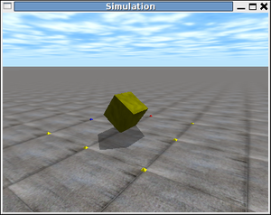
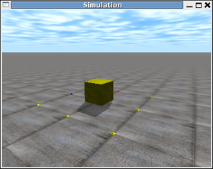
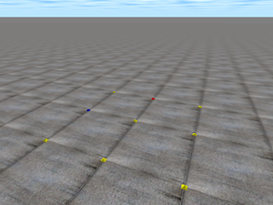
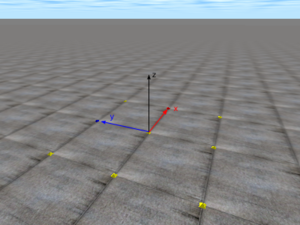
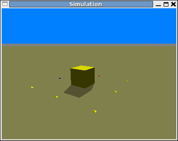
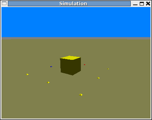

Contenido
[ocultar]Simulación de un cubo en caida libre (III): 3D
| |
|
|

Introducción
En este ejemplo añadiremos visualización en 3D a la simulación del cubo en caida libre. Para ello utilizaremos la librería drawstuff, creada por Russell L. Smith (el autor del ODE). Esta, a su vez, utiliza OpenGL.
Las simulaciones con visualización en 3D son muy interesantes, ya que con un sólo golpe de vista nos permite conocer cómo ha evolucionado nuestro sistema. Sin embargo, es importante tener en cuenta que el ODE nos permite realizar simulaciones sin visualización. Esto es muy útil para realizar búsquedas mediante algoritmos genéritos, en las que hay que evaluar centenares de individuos intermedios. La visualización 3D se utiliza para observar los resultados obtenidos, pero no los el resto de individuos.
Objetivos
- Añadir visualización 3D a las simulaciones con ODE, usando la librería drawstuff.
Código
| Programa principal | |
| Creación y dibujo del cubo | |
| Definición de las constantes. | |
| Definición de los prototipos de body.cpp y las estructuras de datos. |
Compilación
Todos los ejemplos de este tutorial compilan tecleando "make". Sin embargo se describe a continuación cómo se compila directamente usando el GCC:
g++ -o box3 -Iinclude box3_ex/box3.cpp box3_ex/body.cpp libdrawstuff.a -lm -lode -lX11 -lGL -lGLU
Ejecución
Para probar el ejemplo, teclear:
./box3
En la consola aparecerán los siguientes mensajes. El primero lo genera la propia librería drawstuff. Muestra cuáles son las teclas que se pueden emplear para mover la cámara, parar la simulación, simular un paso, volcar las imágenes a ficheros, etc:
Simulation test environment v0.02 Ctrl-P : pause / unpause (or say `-pause' on command line). Ctrl-O : single step when paused. Ctrl-T : toggle textures (or say `-notex' on command line). Ctrl-S : toggle shadows (or say `-noshadow' on command line). Ctrl-V : print current viewpoint coordinates (x,y,z,h,p,r). Ctrl-W : write frames to ppm files: frame/frameNNN.ppm Ctrl-X : exit.
Change the camera position by clicking + dragging in the window. Left button - pan and tilt. Right button - forward and sideways. Left + Right button (or middle button) - sideways and up.
Los últimos mensajes los imprime la aplicación box3:
Keys: 1: Drop the box q: Quit
La tecla '1' sitúa el cubo en su posición inicial, por lo que vuelve a caer. La tecla 'q' finaliza la simulación.
Capturas de pantalla
Visualización de la caida del cubo, en tres instantes diferentes:
| 
Pinchar para ampliar |

Pinchar para ampliar |


Vídeo

Conceptos previos
Sistema de referencia
En la figura 1 se muestra el aspecto del mundo virtual dibujado con la librería drawstuff. Está formado por un cielo, el suelo y unos puntos de referencia en el suelo. El sistema de referencia es como el mostrado en la figura 2. El eje y se dirige hacia el punto azul y el eje x hacia el rojo.
| 
Figura 1: Aspecto del "mundo virtual" dibujado por la librería drawstuff |

Figura 2: Sistema de referencia del mundo virtual |


Texturas y sombras
La librería drawstuff dibuja por defecto los objetos con texturas, incluyendo el suelo y el cielo, y proyecta las sobras de los objetos sobre el suelo. Esto da una mayor sensación de realismos (Figura 4). Sin embargo, para que las simulaciones se ejecuten más rápidamente, es posible eliminar las texturas pulsando control-T (Figura 5) y las sombras con control-S (figura 6).
| 
Figura 4: Texturas eliminadas |

Figura 5: Texturas y sombras eliminadas |


Movimiento de la cámara
La drawstuff permite que el usuario pueda mover la cámara pinchando en la ventana de la simulación y arrastrando el ratón. Según el botón empleado se consiguen diferentes efectos:
- Botón izquierdo: Cambio de la orientación de la cámara. Hacia arriba y abajo (cabeceo) o hacia los lados (viraje)
- Botón derecho: Movimiento hacia adelante/atras o izquierda/derecha.
- Botón central: Movimiento hacia arriba/abajo o izquierda/derecha
Pulsando control-v se obtienen las coordenadas x,y,z y las orientaciones pitch, yaw, roll de la cámara. Esto nos permite introducirlas en nuestro código para que la cámara se sitúe inicialmente en el punto seleccionado.
Control de la simulación
Es posible congelar la simulación pulsando control-P. Y utilizar los movimientos de la cámara para observar los objetos desde diferentes puntos de vista. Cuando la simulación está parada, con control-O simulamos un único paso. Con ello podemos ir a cámara lenta.
Generación de vídeos
La drawstuff permite volcar las imágenes de la simulación a ficheros con extensión .ppm. Para ello hay que pulsar control-W. Para finalizar la captura de imágenes hay que pulsar nuevamente control-W. Los ficheros con las imágenes se almacenan en el directorio frame y sus nombres son de la forma: framexxxx.ppm, donde xxxx es un número decimal de 4 dígitos que indica el número de frame. Comienza por 0001.
Para generar un vídeo MPEG hay que entrar en el directorio frame y ejecutar este comando:
ffmpeg -f image2 -i frame%04d.ppm misimulacion.mpg
Es necesario tener instalada la aplicación ffmpeg (paquete ffmpeg en Debian)
Explicación del código
Organización del código
El código se ha dividido en dos ficheros: box3.cpp y body.cpp. El primero es el principal y se encarga de la simulación. En el segundo se han agrupado las funciones para crear el cubo, establecer su orientación inicial y dibujarlo en la pantalla.
Fichero body.cpp
La creación del cubo (función Body_new()) es igual que en el ejemplo anterior, salvo que la posición y rotación iniciales se ha llevado a la función Body_init(). Esto permite llevar el cubo a su estado inicial cada vez que el usuario lo solicite pulsando la tecla '1'.
El cubo se dibuja en la función Body_render():
void Body_render(MyBody *box)
{
dsSetTexture (DS_WOOD);
dsSetColor (1.0, 1.0 ,0.0);
drawGeom(box->geom);
}
Primero se establece la textura, luego el color y finalmente se dibuja la geometría con la función drawGeom(). El color se especifica mediante el valor de sus componentes Rojo, Verde y Azul. Cada una de ellas puede tener un valor comprendido entre 0 y 1.
La función drawGeom() se emplea para dibujar los difererentes tipos de geometrías y establecer el escalado. Primero se obtiene la posición y rotación de la geometría g:
pos = dGeomGetPosition (g); R = dGeomGetRotation (g);
A continuación el tipo de geometría:
int type = dGeomGetClass (g);
En este ejemplo la única geometría es un hexaedro, pero se ha generalizado para que se pueda ampliar facilmente a ejemplos que usen otras geometrías.
En el caso del hexaedro, se obtienen sus dimensiones y se aplica un factor de escalado definido por la constante VIEW_SCALE del fichero box3_ex/parameters.h.
dGeomBoxGetLengths (g,sides); pos2[0]=pos[0]*VIEW_SCALE; pos2[1]=pos[1]*VIEW_SCALE; pos2[2]=pos[2]*VIEW_SCALE; sides[0]*=VIEW_SCALE; sides[1]*=VIEW_SCALE; sides[2]*=VIEW_SCALE;
Por defecto, las unidades métricas que usa ODE son metros. Cada una de las cuadrículas dibujadas en el suelo equivalen a un metro. Si los objetos a simular son más pequeños, como es el caso de los módulos de los robots modulares, hay que cambiar la escala para verlos con un tamaño mayor.
El valor dado a VIEW_SCALE es de 10, por lo que cada cuadrícula del suelo equivale a 10cm
Finalmente se dibuja el cubo invocando a la función dsDrawBox() de la librería drawstuff.
Función Main (fichero box3.cpp)
La simulación es similar a la del capítulo anterior, pero ahora el bucle principal lo controla la drawstuff.
Lo primero es configurar la drawstuff. Hay que establecer las funciones de retrollamada:
dsFunctions fn; fn.start = &start; fn.step = &simLoop; fn.command = &command;
La función start() se invoca al comienzo de la simulación. Cada vez que haya que realizar un nuevo paso de simulación, se llamará a simLoop() y cada vez que el usuario aprieta una tecla, se ejecutará command().
Otros parémtros que se configura con:
fn.version = DS_VERSION; fn.stop = 0; fn.path_to_textures = (char *)"./textures";
la versión, si la simulación está parada inicialmente y la ruta hacia donde se encuentran las texturas a aplicar.
Una vez configurado el ODE y construido el cubo, se invoca a la función dsSimulationLoop() para comenzar. A partir de este punto, el bucle principal de la drawstuff toma el control y llama a las diferentes funciones de retrollamada:
dsSimulationLoop (argc,argv,400,300,&fn);
Además de pasar como parámetros los recibidos por la línea de comandos (argc, argv), se pasan las dimensiones de la ventana donde representar el mundo virtual (en este ejemplo 400x300 pixeles) y la configuración establecida (fn).
Función simLoop()
Se encarga de realizar un paso de simulación. El parámetro pause indica si la simulación está parada o no. En caso de no estar detenida, se realiza la simulación como en el ejemplo anterior:
if (!pause) {
dSpaceCollide (space,0,&nearCallback);
dWorldStep(world,STEP);
dJointGroupEmpty (contactgroup);
usleep(PAUSE);
}
Se ha añadido una pausa final, determinada por la constante PAUSE. Dependiendo de la velocidad del ordenador donde se está ejecutando la simulación, puede que esta vaya muy rápido, por lo que es necesario hacer una pausa para ralentizarla. Por otro lado, al poner una pausa, la CPU se descarga.
Por último hay que dibujar el cubo:
Body_render(&box);
Función Start
Esta función es invocada al comienzo de la simulación. Se establece la orientación y posición inicial de la cámara:
static float xyz[3] = {-2.46,-1.85, 1.14};
static float hpr[3] = {33.5,-15.0,0.0};
dsSetViewpoint (xyz,hpr);
El parámetro hpr es la orientación: pitch, yaw y roll en grados.
Después se imprime el menú para este ejemplo:
printf ("Keys: \n");
printf ("1: Drop the box\n");
printf ("q: Quit\n");
Función Command
Esta función se invoca cada vez que el usuario aprieta una tecla y se pasa en el parámetro cmd. En este ejemplo, si el usuario pulsa la tecla '1' el cubo se colocará en su posición inicial por lo que volverá a caer. Si se aprieta 'q' termina. Esto se consigue llamando a la función dsStop() que finaliza el bucle principal.
if (cmd=='1') {
Body_init (&box);
}
else if (cmd=='q') {
dsStop();
}
| |
|
|